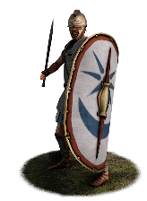
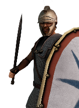

RTR: Imperium Surrectum
RTR: Imperium SurrectumPontic Imitation Legionaries


Class: heavy · Category: infantry · Men per unit: 40
Reforms: Unlocked by Mithridatic Romanized Reforms
Description
The legions of Pontos, trained in the Roman way of war, are a reliable force ready to face down the enemies of the kingdom. They were organized into companies and cohorts made up of recruits from across the empire. Farmers and hillmen drilled under Pontic and Roman officers in this new way of fighting should be able to counter Roman heavy infantry. Some recruits came all the way from Italy, runaway slaves eager to fight their old masters, but most are simply the bravest local levies. They have been equipped with arms and armour more suited to this new, foreign way of fighting, produced en masse in forges all around the kingdom; sturdy mail and scale-reinforced linothorax, Phrygian-style helmets, metal greaves, sharp swords, pila, and heavy shields. These men serve as the Pontic king’s primary line infantry. They will throw a volley of missiles at their foes at close range before mounting a powerful charge. Their armour and shields provide them with excellent protection, while allowing for good mobility, allowing them to manoeuvre around the battlefield to flank the enemy, intercept reserves, and even chase down routing units. This makes them a very adaptable force!
Historical background
Romanised infantry was first used by the kingdom of Pontos under Mithridates VI Eupator during his wars against the Roman Republic in the first century BC. Frontinus writes that the Pontic commander Archelaos had auxiliaries armed "in the Roman way" placed behind his Makedonian phalanx in a battle against Sulla. Among those men were runaway slaves from Italy (Frontin. Str. 2.3.17). This may be referring to the battle of Orchomenus, fought in 85 BC during the first Mithridatic war (89–85 BC). Plutarch wrote about this battle and described Sulla digging trenches to counter Pontic cavalry (and chariots), just as Frontinus describes. Archelaos was ultimately defeated. Plutarch describes how helmets, swords and fragments of steel breastplates could still be found embedded in the mud of the marshes where the battle had taken place nearly 200 years later (Plut. Sulla 21.4). Perhaps some of those arms and armour were those used by this new kind of infantry.
A more impressive force of Romanised infantry was raised by Mithridates around 74 BC in anticipation of his final clash with Rome, both of which eager for yet another war. He had already fended off Murena, but there was no shortage of ambitious Romans, such as Lucullus, who would have loved nothing more than to face the resilient king (Plut. Lucullus 6.1). Yet, they were preoccupied in Spain fighting the rebellious governor Sertorius. Mithridates saw this as an opportunity and forged an alliance with him, hoping Rome could not handle them both simultaneously. He immediately prepared for war, building ships, storing grain and gathering troops, while promising his new ally three thousand talents, forty ships and his support. In exchange, he was sent a general, Marcus Marius, along with an army (Plut. Sert. 24, Plut. Lucullus 8.5). These may have helped Mithridates reorganize some of his forces along Roman lines (Green, Alexander to Actium (1990), p. 653).
120,000 men were drilled in what Plutarch calls the 'Roman phalanx' and equipped with - what Plutarch considers - a more sensible kit compared to the arms and armours of previous Pontic armies, which the historian derides as lavish and excessive, evoking familiar tropes of Eastern luxury and hubris (Plut. Lucullus 7.4). The size of Mithridates’ army was nevertheless great, and Lucullus, being outnumbered, hesitated to engage it (Plut. Lucullus 8.5). However, it seems these hastily assembled imitation legions could not stand up to experienced Roman troops, who were more familiar in this style of fighting. Despite a few successes and a valiant effort on his part, the Pontic king was eventually forced to retreat into the mountains of Armenia by Lucullus, losing much of his army along the way. There, he managed to raise a new force, partly comprised of 70,000 of the bravest Armenian infantrymen available, once more trained in the Italic way of war, while a new set of arms were quickly manufactured for these new recruits (App. Mithr. 13.87). He was able to reconquer Pontos, while Lucullus was forced to retreat. Still, a newly-assigned general by the name of Pompey forced Mithridates to flee again, this time to the shores of the Black Sea. Seeing his kingdom crumble, dealing with revolts from the parts he still held, and mistrusting his army, he eventually committed suicide (App. Mithr. 16.109). The kingdom of Pontos was no more. However, it was not long before legions were again raised in the region, this time by the Romans, to fight Pharnaces, Mithridates’ son (Sabin, Cambridge History of Greek and Roman Warfare (2007), p. 356).
Stats
| Rank in roster | Rank in roster | Rank in roster | Rank in roster | ||||||||
|---|---|---|---|---|---|---|---|---|---|---|---|
| Men per unit | 40 | ███······· 31% | Attack | 15 | ████████·· 83% | Charge bonus | 12 | ████······ 42% | Defence | 45 | █████████· 87% |
| · armour | 14 | ████████·· 80% | · defence skill | 24 | ███████··· 68% | · shield | 7 | █████████· 92% | Morale | 13 | ███████··· 71% |
| Discipline | Normal | Training | Highly trained | Recruitment cost | 2,246 dn | ██████···· 59% | Upkeep per turn | 822 dn | ████████·· 79% | ||
| Turns to recruit | 4 |
Weapons
| Primary | Secondary | Primary | Secondary | Primary | Secondary | Primary | Secondary | ||||
|---|---|---|---|---|---|---|---|---|---|---|---|
| Attack | 15 | 11 | Charge bonus | 12 | 13 | Type | thrown · blade | melee · blade | Damage | piercing | piercing |
| Projectile | javelin | — | Range | 50 | — | Ammunition | 2 | — | Properties | Used just before charging into combat | — |
Defence
| Primary | Secondary | Primary | Secondary | Primary | Secondary | Primary | Secondary | ||||
|---|---|---|---|---|---|---|---|---|---|---|---|
| Total | 45 | — | Armour | 14 | — | Defence skill | 24 | — | Shield | 7 | — |
Condition and terrain
| Hit points | 1 | Ground: scrub / sand / forest / snow | 0 / -2 / 0 / -2 | Charge distance | 30 | Formations | Square |
Technical stats
| Time between blows (primary / secondary) | 2.5 s / 2.5 s | Extra fatigue in hot climates | 4 | Collision mass per man (1.0 is normal) | 1.35 | Spacing between men: close / loose | 1 × 1.2 m / 2 × 2.4 m |
| Default ranks | 5 |
In battle: Can sap · Very good stamina
Who can recruit it
A core roster unit for one faction, which can raise it anywhere it holds the right building:
Exactly what a settlement must have, route by route (2)
| Building | Also requires | Building | Also requires | ||||
|---|---|---|---|---|---|---|---|
| Direct Rule | Tier 3 Military Industrial Complex · Mithridatic Romanized Reforms · Tier 2 Colony | Homeland | Tier 2 Military Industrial Complex · Mithridatic Romanized Reforms |